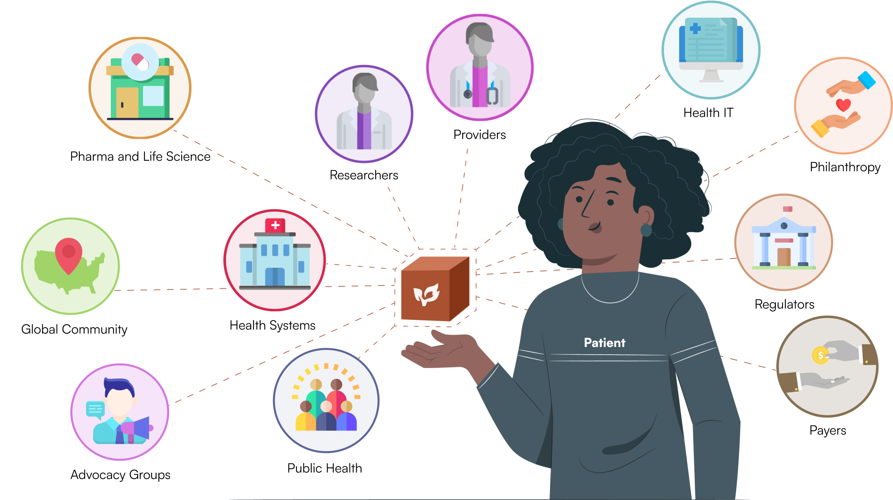

For Our Future
Building data unity
for patients, clinicians, and research.
Common data definitions drive high-quality computable data that are trusted, consistent, and usable.

Caring for Every Patient
Break down silos and manual processes for efficient care and research across all settings, building trust with your care team and accurate data.


Learning with Every Patient
Create easily accessible, accurate, and longitudinal patient stories that caregivers can use to personalize treatment and care.
Transforming Care for All
Revolutionize healthcare and research by leveraging standardized data of individual patients to contribute to the health of all future patients.

People's lives are depending on what we do and what these data tell us
Dr. Monica Bertagnolli
Prior President of American Society of Clinical Oncology, Prior Group Chair of Alliance for Clinical Trials in Oncology
Health Data.
Collect Once,
Use Everywhere.
CodeX is a global community of healthcare stakeholders currently working on data standards in three domains. We build and implement in the field and on-site.

Cancer
The first domain that the CodeX community tackled is cancer. Using the minimal Common Oncology Data Elements (mCODE), an open data standard enabling high-quality data capture for cancer that can be widely adopted.
70+ oncology elements in use at Dana-Farber Cancer Institute, MD Anderson Center, Massachusetts General Hospital and 44 other institutions. Versions of the mCODE and associated modeling tools are currently operational in over 250 organizations.
Genomics
This team is advancing the standardization, interoperability, and exchange of genomic data to improve care processes, clinical workflows, and patient outcomes from all areas of clinical care.
Cardiovascular Health
This team is engaging patients, as well as clinical and research stakeholders, to create standard representations of heart health to enable standards-based interoperability in cardiovascular health and healthcare.
Our Traction
Since 2019, CodeX has been working in partnership with our community, building interoperable systems to positively impact the lives of real patients.
The CodeX Community
Patients
Providers
Health Centers
Pharma and Life Science
Health IT
Research
Regulators
Philanthropy
Public Health
Payers
Advocacy Groups
Global Community
Use Case Spotlight:
ICAREdata
Clinical trials are the gold standard for clinical care interventions. 92% of cancer patients in the United States are not enrolled in clinical trials due to poor data collection of their cancer therapies. This project focuses on collecting key outcome data that is standardized, research-grade, and longitudinal across organizations to promote health equity and reduce burden on health sites. This novel approach to data collection has already been adopted by over 13 health sites.
Cancer patients are willing to share their data in hopes of finding solutions, not just for themselves but for patients in the future
Debi Willis
CEO and Founder of PatientLink Enterprises, Cancer Survivor
Check Out Our Latest White-Paper
This white paper explores how the minimal Common Oncology Data Elements (mCODE™) standard could be leveraged to achieve more equitable health outcomes for cancer patients from diverse populations.
Build and Innovate on Our Work
We enable high-quality computable data using Health Level Seven International (HL7) and Fast Healthcare Interoperability Resource (FHIR) standards to create a common language.
Get Engaged
CodeX hosts events every month to keep our community informed and engaged, and to make sure the public’s opinions are heard.
Expand Our Reach
There are currently over 250+ stakeholders involved in CodeX. Become a member today or join our community of practice. We also are looking to expand our partnerships across various health systems to include small community health centers. Spread the word and implement CodeX at your institution.
Support Our Mission
Funding from foundations, philanthropies, and government organizations will allow us to further scale and drive maximum adoption across systems. Your support will also allow us to expand our work into new domains such as genomics and cardiovascular disease.
Open Source
CodeX tools and implementations are open source under the Apache 2.0 license. CodeX data standards are available under the Creative Commons 0 license (CC0). Take a closer look at our technical work at our GitHub.